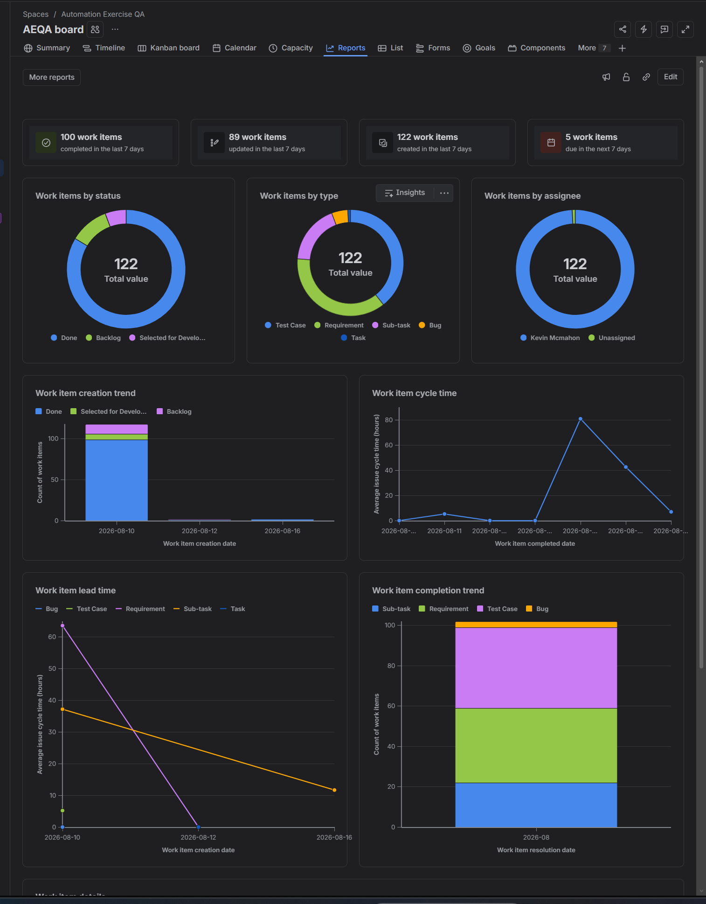
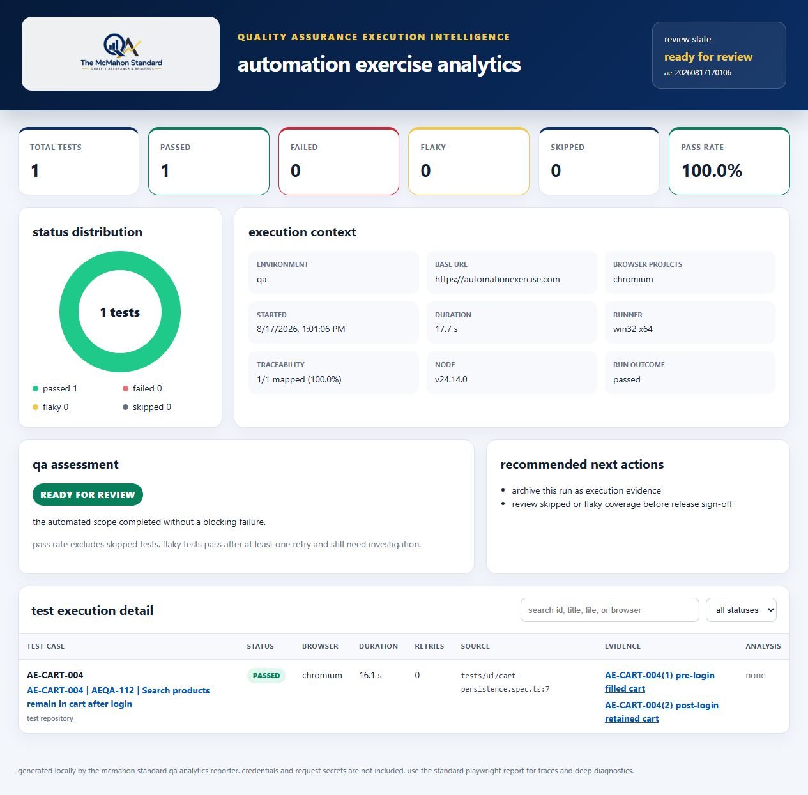
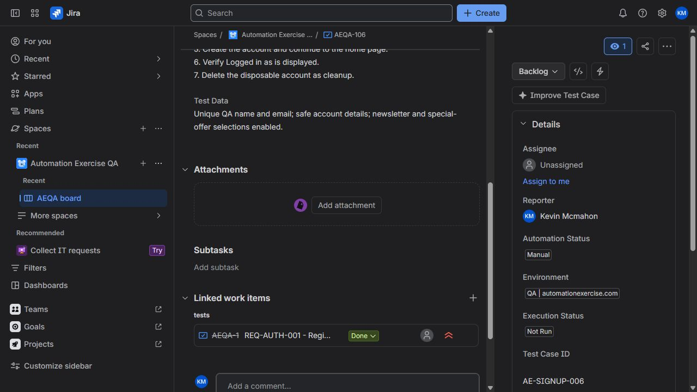

Automation Exercise.
Requirements, execution, defects and automation.
A hands-on QA lifecycle project against an e-commerce practice application, spanning manual tests, Jira, Postman, Playwright and carefully documented outcomes.

Context matters.
This project joins 44 requirements with designed test coverage, Jira execution records, API validation and browser automation. Failures and rejected observations remain visible so the evidence tells the full story.
53 cases have 51 passed and two failed. Three defect observations remain open and three were rejected. Corrected Postman execution passed 42 of 42 assertions.
What I did.
Manual testing
Design positive, negative and functional tests against traced requirements.
API and browser checks
Validate 14 canonical API scenarios and implement repeatable Playwright coverage.
Defect investigation
Examine six observations, retaining three open and three rejected after reconciliation.
How I tested it.
Trace each requirement to a testable condition
Execute manual, API and automation cases
Capture actual behavior and investigate defects
Retest and report execution separately from coverage
Inspect the work.
These are authentic project artifacts and source links, not illustrative sample reports.



What it shows.
This is my most complete demonstration of QA planning, manual testing, API validation, Jira traceability, defect triage and automation working together.